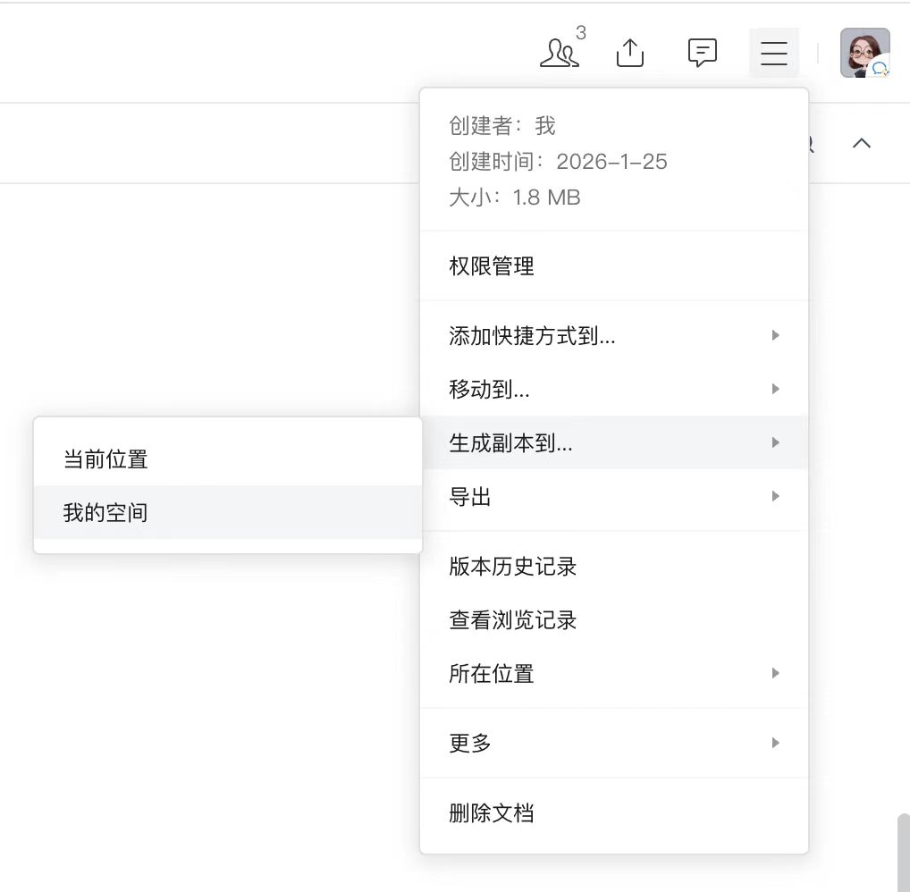
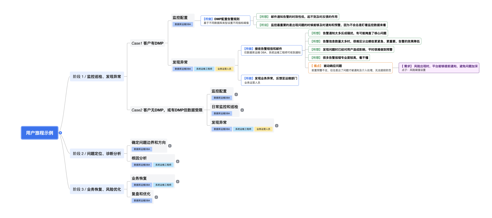

背景与核心理念
设计思维的核心在于从用户视角出发，先理解问题、再定义方案。公司自引入 IBM 设计思维方法论以来，这一理念已逐步被团队接受。但在真实项目实践中，完整的方法体系对大多数日常项目而言门槛偏高，团队较难持续落地。
经过设计师在云BG多个产品线的反复实践与验证，我们发现：尽管设计思维提供了一整套工具，但在日常项目中，用户旅程图是串联需求全流程的核心抓手。它以用户的实际工作场景为线索，将用户行为、痛点、需求贯穿起来，从需求调研到方案输出形成闭环。相比干系人地图、用户画像等更适合产品级一次性梳理的工具，用户旅程图是每个项目都能用、每次需求梳理都需要的工具。
因此，我们以用户旅程图为核心，构建这套轻量化设计方法——保留设计思维的内核，降低落地门槛，让团队真正用起来。
建立用户同理心
将用户的工作场景、行为习惯和真实困难直观呈现，帮助团队从用户视角理解问题，而非凭经验臆断用户需求
保障客户价值
为需求分析和方案发散提供事实依据，确保最终方案真正解决用户痛点、为客户创造价值，而非停留在功能堆砌
人人可上手
告别过去依赖设计工具与专业设计师的沉重流程，让团队中的每个人都能轻松绘制用户旅程、参与需求梳理
用户旅程图
用户现状旅程地图是梳理用户在真实场景中工作细节的工具。它以旅程地图的方式记录用户的行为、感受和想法，并在此基础上提炼痛点、定义需求。
使用流程
本方法遵循简化的设计思维流程，以用户旅程图为载体，从需求调研到方案发散，最终目标是明确一个需求应该怎么做。
用户旅程9要素
用户旅程图由以下 9 个关键要素构成，从角色到阶段、从行为到痛点、从需求到方案，层层递进，形成完整的需求分析闭环。
按参与程度划分核心用户与参与用户，关注实际执行者而非购买决策者
最粗粒度的旅程划分，每个阶段对应一个独立业务大步骤，构成旅程骨架
对阶段进一步拆解的更小粒度步骤单元，适用于流程长、逻辑复杂的阶段
同一子阶段内因用户条件、系统状态不同产生的多条互斥路径
描述用户在特定阶段/子阶段中执行的具体行为，需明确行为主体及内容
记录用户行为动机、内心感受与口头表达，为痛点推导提供事实依据
用户在完成任务过程中遇到的具体障碍或负面体验，是需求推导的直接来源
基于痛点推导出的用户期望达成的目标，定义解决方案方向的依据
将需求转化为可落地执行方案，连接需求分析与产品/服务/培训设计的桥梁
用户旅程图模板
我们提供三种不同形式的用户旅程模板，请根据你的项目场景和团队习惯，选择最适合的一种进行使用：

特点
以表格形式呈现，横向为阶段，纵向为角色和各要素，支持多角色并排展示，泳道清晰；版面直观清晰，与传统旅程图样式接近
使用方式
1. 点击"使用模板"链接打开企微文档
2. 点击文档右上角的三个点图标，选择「生成副本到...」→「我的空间」，将模板复制到自己的空间中

3. 根据用户旅程图的用户角色数量选择合适的模板（多角色模板/单角色模板）
4. 在模板表格中依次填入阶段、子阶段、所做、所想、痛点、需求、点子等用户旅程要素

特点
以树状结构展开，以节点层级呈现，阶段和内容可随时拖拽调整，灵活度高；更像思维导图，发散感较强
使用方式
1. 点击"使用模板"链接打开企微文档
2. 点击文档右上角的三个点图标，选择「生成副本到...」→「我的空间」，将模板复制到自己的空间中
3. 根据场景需要添加或删除节点，拖拽调整阶段顺序和层级结构
4. 在各节点中填入用户角色、所做、所想、痛点、需求等内容
更适合AI 工作流场景，无格式限制，便于衔接 AI 工具继续做Demo 输出等环节。
数据库监控运维平台（DMP） - 数据库监控与故障处置用户旅程图
产品：数据库监控运维平台（DMP）
目标用户：数据库运维 DBA、系统运维工程师、业务运营人员、IT 运维主管/CIO
场景：数据库监控配置、异常发现、问题定位诊断、业务恢复及风险优化的全流程
文档版本：v1.0 / 2026-06-16
场景说明
本文档梳理数据库监控运维场景下，从监控配置与巡检、异常发现、问题定位与根因分析，到业务恢复和风险优化的全流程用户旅程。涵盖有 DMP 平台和无 DMP 平台（或 DMP 数据受限）两种客户环境下的不同处置路径。
覆盖范围：监控配置与巡检 → 发现异常 → 问题定位与诊断分析 → 业务恢复 → 复盘与优化
阶段 1 / 监控巡检与发现异常
Case1: 客户有 DMP
1.1 监控配置
【用户】⭐⭐ 数据库运维 DBA
【所做】在 DMP 平台上配置告警规则，基于不同数据库类型设置不同指标阈值
【所想】邮件通知告警的时效性低，起不到及时反馈的作用
【所说】监控最重要的是出现问题的时候能够及时通知和预警，因为不会总是盯着监控数据来看
1.2 发现异常
【用户】⭐⭐ 数据库运维 DBA / ⭐ 系统运维工程师 / ⭐ 业务运营人员
【所做 1】接收告警短信和邮件，目前仅数据库运维 DBA 和系统运维工程师可收到通知
【所想】告警通知太多反成骚扰，有可能掩盖了核心问题；告警信息数量太多时，很难区分出哪些更紧急、更重要，告警的效果降低；发现问题时已经对用户造成影响，平时很难做到预警；很多告警报错专业度较高，看不懂
【痛点】被动响应问题。前置预警不足，往往是出了问题才被通知及介入处理，无法提前防范
【需求】风险出现时，平台能够提前通知，避免问题加深
💡 【点子】
风险阈值设置：支持基于不同数据库类型配置差异化风险阈值，实现前置预警，变被动响应为主动发现
【所做 2】业务运营人员发现业务异常，反馈至运维部门
Case2: 客户无 DMP，或有 DMP 但数据受限
1.1 自建监控体系
【用户】⭐⭐ 数据库运维 DBA
【所做 1】部署 zabbix 并自定义大屏，监控端口、CPU 内存、磁盘、表空间等指标
【所做 2】撰写运维脚本，监控慢查询、死锁、读写等待过长等指标
1.2 日常监控和巡检
【用户】⭐⭐ 数据库运维 DBA
【所做 1】专人值守，关注指标趋势和异常，在监控室或专人屏幕监控，查看陡增/降指标和飘红飘黄的地方
【所想】不知道全部数据库的健康状态，没有收到报告，担心未能及时发现问题；指标众多，不知道哪些更关键、背后反映什么问题
【痛点】监控数据难懂、不够直观。告警和监控指标繁多且有掌握门槛，难以了解全局情况、难以判断是否存在风险和异常
【需求】能直观地查看数据库资产的整体运行概貌，无需理解众多、复杂的指标就能了解大致的问题和处置步骤
💡 【点子】
告警聚合和 AI 分析：自动聚合关联告警，AI 分析指标异常根因，输出可理解的诊断结论
步骤式排障向导：提供按步骤排查问题的交互式向导，降低排查门槛
【所做 2】执行运维脚本，采集指标信息
1.3 发现异常
【用户】⭐⭐ 数据库运维 DBA / ⭐ 系统运维工程师 / ⭐ 业务运营人员
【所做 1】接收告警短信和邮件（同 Case1）
【所想】同 Case1：告警通知太多反成骚扰，发现问题时已经对用户造成影响
【所做 2】发现业务异常，反馈至运维部门
阶段 2 / 问题定位、诊断分析
2.1 确定问题边界和方向
【用户】⭐⭐ 数据库运维 DBA
【所做】确定异常对象和表征：定位出问题的设备、可能影响的其他设备，以及具体异常表现（是无响应挂了还是卡慢）；通常以告警、异常项、巡检报告作为判断依据，或进入数据库后台进行分析
【所想】如果设备众多，短时间很难定位具体是哪些；如果问题不清晰，容易出现部门扯皮，业务、网络、系统数据库人员轮番排查；排查专业门槛高，团队排查能力弱
【痛点】定位难、沟通难。业务和资产众多时难以定位；原因不清晰/复杂时需要多方协查，沟通效率低下，容易扯皮
【需求】快速准确地定位问题根源及影响面
💡 【点子】
资源关系拓扑图：自动绘制数据库与周边资源（应用、网络、服务器）的依赖拓扑，故障时一键定位影响范围
2.2 根因分析
【用户】⭐⭐ 数据库运维 DBA / ⭐⭐ 系统运维工程师
【所做 1】按维度依次分析数据库指标（查询、CPU、内存、磁盘等），运用各维度的看指标逻辑定位问题（如查询维度先看慢查询数量、再看高频查询模板、最后看历史会话定位问题 SQL）
【所想】监控其实还是比较准的，但是问题是监控到的现象，比如速率降低，具体是什么原因比较难分析，可能是多个因素导致；经常遇到 SQL 语句无法执行的问题，不好排查，而且容易扯皮
【痛点】分析难。分析需要深入数据库内部分析会话、SQL、锁情况，繁琐且专业难度高，不能保证团队的 DBA 精通全部类型数据库和问题
【需求】平台能够自动分析根因，给出明确的诊断结论，降低对 DBA 个人经验的依赖
💡 【点子】
智能根因分析：基于多维指标关联分析，自动定位问题根因（SQL、锁、资源瓶颈等），输出诊断报告
【所做 2】准确定位问题后立即恢复业务；暂时无法定位时先保存环境配置，通过 kill 会话或重启等方式临时恢复业务
【所想】监控报表不仅需要呈现指标现状，最好还可以直接暴露存在问题或风险的地方，能够有一些结论
【痛点】处置难。不清楚处置方案是否能从根本解决问题，只能凭借已有的经验，问题可能会再次出现
【需求】平台能够根据诊断结果推荐处置方案，并评估方案的彻底性和风险
💡 【点子】
处置方案推荐：基于根因分析结果，自动推荐处置方案（kill 会话、扩容、索引优化等），并标注方案彻底性和风险等级
【所做 3】协调系统运维工程师协助排查网络、服务器、机房等相关设备和指标
阶段 3 / 业务恢复、风险优化
3.1 业务恢复
【用户】⭐⭐ 数据库运维 DBA / ⭐⭐ 系统运维工程师 / ⭐ 业务运营人员
【所做 1】根据异常类型采取不同处置措施：资源规格和配置问题则扩容或修改配置；SQL 问题则 kill 会话；软件版本及其他问题则找第三方厂商处理
【所想】有没有能够一键恢复业务的操作？能够快速恢复业务；如果要到物理服务器上进行操作，就会比较麻烦
【痛点】处置操作存在门槛，或依赖第三方时效低。部分操作需要登入数据库后台执行 SQL，非单一问题且不熟悉时需要联系其他同事/厂商
【需求】一键处置 + 处置过程可视化，简单、高效地修复问题，减少故障对业务造成的影响
💡 【点子】
一键处置：提供常用处置操作的一键执行能力（kill 会话、扩容、参数调整等），无需登录后台
处置过程可视化：处置操作全程可视化展示，每一步操作的影响范围和风险提示一目了然
【所做 2】处置异常过程中寻求系统运维工程师协助，比如重启设备或修改网络配置等
【所做 3】跟业务运营人员验证业务已恢复
3.2 复盘和优化
【用户】⭐⭐ 数据库运维 DBA / ⭐ IT 运维主管/CIO
【所做 1】通常按季度汇报，总结周期内出现的问题，针对频发问题分析共性原因并提供解决方案；由 IT 部运维主管/CIO 等确认后续是否优化
【所做 2】协同业务部门优化业务 SQL，协同 SRE 工程师进行高可用改造或添加存储盘等
特点
纯文本 Markdown 格式，配合 AI Skill 辅助生成；纯文本，兼容所有文档系统，无需依赖特定编辑器；AI 辅助生成，基于业务场景快速输出完整初稿
使用方式
- 下载并安装"用户旅程图 Skill"
- 向 AI 提供关键信息：产品类型与名称、目标用户、场景名称、场景描述、梳理方式（用户访谈/竞品资料/业务推演）
- AI 先生成旅程框架（角色、阶段划分），确认后再一次性生成完整初稿
实践技巧
基于事实推导
通过观察、访谈获取一手信息，及时记录（录音、拍照、截图），避免凭主观经验替代用户真实反馈
渐进式完善
无需等待调研全部完成，可先搭建初步框架，随信息补充逐步迭代，新增样本不再提供新信息时即视为饱和
归纳而非罗列
对原始调研数据进行清洗与归纳，聚焦与目标场景强相关的信息，提炼共性问题，避免照搬访谈原文